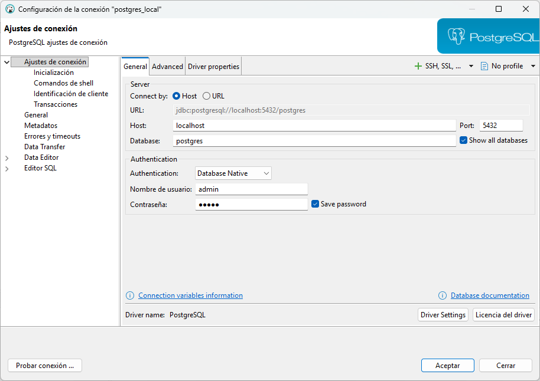
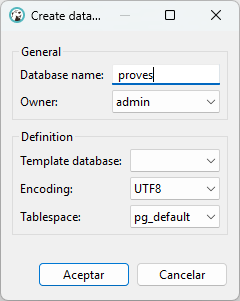

1. Introducció
Fins ara hem treballat amb un servidor PostgreSQL al núvol que tenia dues bases de dades: geo i factura. En aquestes bases de dades únicament fèiem consultes (SELECT) i ningú modificava l’estructura ni les dades, per això no hi havia conflictes.
A partir d’ara, amb les sentències de DDL i DML, farem el següent:
- DDL → crear i eliminar taules, columnes, esquemes…
- DML → inserir, modificar i eliminar dades
Per tant, no ens convé en absolut treballar sobre la Base de Dades geo ni sobre factura, ja que el que faríem seria "boicotejar-nos" entre nosaltres.
Així, a partir d’ara, en lloc de fer ús d’un servidor allotjat al núvol, treballareu amb un servidor PostgreSQL de manera local, utilitzant contenidors Docker. En tot cas, seguirem utilitzant el client DBeaver per connectar-nos i gestionar la base de dades. Treballarem amb dues Bases de Dades noves en local utilizant contenidors:
- proves: servirà per a fer proves, com el seu propi nom indica. Tots els exemples del tema els farem en aquesta BD.
- factura_local: tindreu una Base de Dades per a cadascú en local. És on haureu de treballar els exercicis.
Anem a fer la instal·lació:
1.1 Instal·lació de Docker
🔹Windows
1) Verifica els requisits i activa la virtualització/WSL2:
Activa WSL 2 i comprova la versió amb: wsl --version (Si no apareix, instal·la-ho/actualitza-ho amb: wsl --install / wsl --update).
2) Instal·la Docker Desktop: https://www.docker.com/products/docker-desktop
3) Assegura’t que Docker Compose està disponible (normalment ve inclòs amb Docker Desktop):
Executa: docker compose version i, si respon amb una versió (per exemple, «Docker Compose version vX.Y.Z»), està instal·lat i accessible en el teu PATH.
🔹Ubuntu (en les aules del centre educatiu no fa falta fer la instal·lació)
1) Instal·la Docker:
sudo apt update
sudo apt install docker.io
2) Instal·la Docker Compose:
sudo apt install docker-compose
1.2 PostgreSQL amb Docker Compose
1) En una carpeta, per exemple, docker/postgres_local, crea l’arxiu buit docker-compose.yml. El fitxer docker-compose.yml defineix el contenidor de PostgreSQL, la seva configuració i els ports per a connectar-se des de DBeaver.
Copia el contingut següent dins del fitxer docker-compose.yml
services:
postgres:
image: postgres:16.4
container_name: postgres_local
environment:
POSTGRES_USER: admin
POSTGRES_PASSWORD: admin
POSTGRES_DB: postgres
ports:
- "5432:5432"
volumes:
- postgres_data:/var/lib/postgresql/data
volumes:
postgres_data:
2) Alça el servei:
En la carpeta on està el docker-compose.yml, executa en la terminal:
docker compose up -d
Explicació dels camps principals:
- image: indica quina imatge de PostgreSQL utilitzar (en aquest exemple, la versió 16.4).
- container_name: nom que tindrà el contenidor.
- environment: defineix l’usuari, la contrasenya i la base de dades que es crearan inicialment.
- ports: mapeja el port local 5432 al port 5432 del contenidor, permetent connectar-se des de DBeaver.
- volumes: manté les dades persistents encara que el contenidor s’aturi o es torni a crear.
Consell
Pots personalitzar POSTGRES_USER, POSTGRES_PASSWORD i POSTGRES_DB segons les necessitats del teu projecte.
1.3 Crear una connexió des de DBeaver al servidor PostgreSQL creat amb Docker
Una vegada el contenidor PostgreSQL està en funcionament, pots connectar-te des de DBeaver seguint aquests passos:
1) Obre DBeaver i connecta’t al servidor PostgreSQL utilitzant les credencials definides en el docker-compose.yml.
2) Fes clic a Database → New Database Connection.
3) Selecciona PostgreSQL i fes clic a Next.
4) Introdueix les dades de connexió definides en el fitxer docker-compose.yml:
- Host: localhost
- Port: 5432
- Database: Postgres
- Username: admin
- Password: admin

5) Fes clic a Test Connection/Probar Conexión per comprovar que la connexió funciona correctament.
6) Si tot és correcte, fes clic a Aceptar. Ara podràs veure i gestionar la base de dades PostgreSQL des de DBeaver.
Nota
Si tens problemes de connexió, comprova que el contenidor està en funcionament amb docker ps i que el port 5432 no està ocupat per un altre servei.
1.4 Crear bases de dades dins de la connexió postgres_local
Creem les bases de dades proves i factura_local dins de la connexió postgres_local perquè aquesta connexió correspon al servidor PostgreSQL que tenim instal·lat en local amb Docker.
1) Fes clic dret sobre la connexió: postgres_local.
2) Selecciona: Create → Database
3) En la finestra escriu el nom de la base de dades: proves

4) Fes clic dret sobre la connexió postgres_local.
5) Prem Refresh / Actualitzar.
6) Comprova que apareix la base de dades proves en la llista.
7) Fes els mateixos passos per a la base de dades: factura_local
IMPORTANT
Us recomane que us creeu una altra connexió per a cadascuna de les Bases de Dades anteriors. D'aquesta manera, segurament, en tindreu tres connexions: la de postgres_local , la de factura_local i la de proves, a més de les connexions al servidor al núvol, geo i factura.
Llicenciat sota la Llicència Creative Commons Reconeixement NoComercial CompartirIgual 3.0